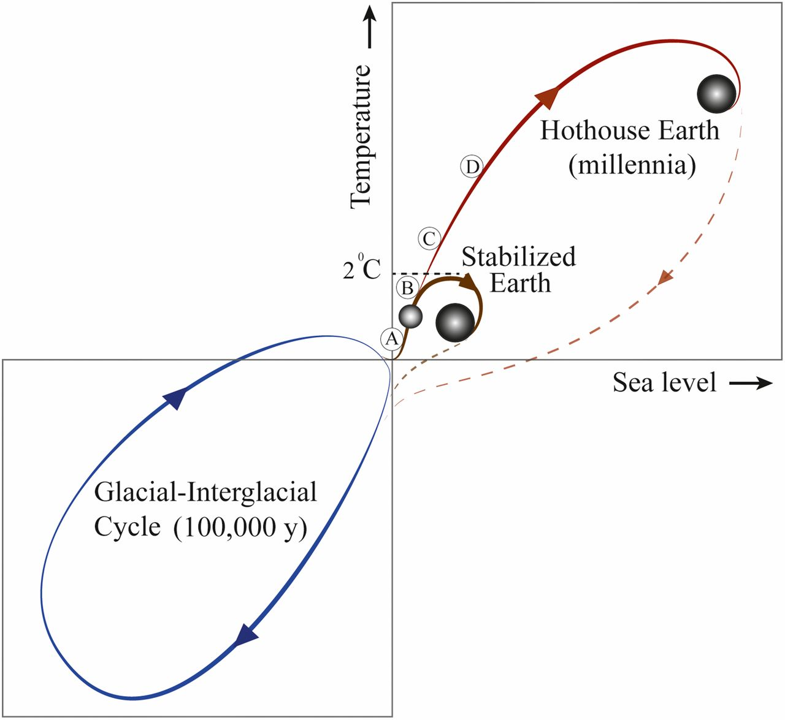

Content Strategy for Degrowth
Heinz Wittenbrink
2019-10-19
Creatives for climate
Climate and CO2
Keeling curve

https://www.ipcc.ch/site/assets/uploads/2018/02/AR5_SYR_FINAL_SPM.pdf
Leaving the holocene
https://www.unternehmensgruen.org/wp-content/uploads/2016/11/PlanetareGrenzen_Gerten_PIK.pdf

Steffen, W., Broadgate, W., Deutsch, L., Gaffney, O., & Ludwig, C. (2015). The trajectory of the Anthropocene: The Great Acceleration. The Anthropocene Review, 2(1), 81–98. https://doi.org/10.1177/2053019614564785
Consequences of global heating
“The end of the arctic as we know it”

The end of the Arctic as we know it | Environment | The Guardian
Indian villages lie empty as drought forces thousands to flee | World news | The Guardian
CO2 budgets
In its 2018 Special Report, the Intergovernmental Panel on Climate Change estimates the CO2 budget at 420 Gt if the 1.5 degree target (in terms of global average surface air temperature) of 66 % is to be achieved. If emissions remained the same, this budget would be used up in nine to ten years.[9][10]
According to the authors of A good life for all within planetary boundaries, if we divided the amount of carbon that we can still burn equally between everyone on earth, then each person could emit 1.6 tonnes of CO2 equivalent per year until 2100. That would give us a 66% chance of staying beneath 2°C of warming, generally accepted as a threshold for dangerous climate change.
However, if you use the latest figures (as of 2018) for human population and remaining carbon budget, that falls to 1.2 tonnes of CO2 equivalent per person per year.
That’s less than a one-way economy flight from London to San Francisco.
Source: Nick Evershed, Carbon countdown clock: how much of the world’s carbon budget have we spent? The Guardian, January 19, 2017.
Our lifestyle is toxic
“Imperial lifestyle” (Ulrich Brand)

World’s richest 10% produce half of global carbon emissions, says Oxfam | Environment | The Guardian

In particular, the energy sector with stationary and mobile sources emits greenhouse gases in Germany, especially carbon dioxide. However, emissions from industrial processes and agriculture are also relevant, the latter in particular due to the release of methane and nitrous oxide.

The climate target of reducing Germany’s emissions by 40 percent by 2020 compared to 1990 remains unattainable, especially due to the release of methane and nitrous oxide, despite the extremely good 2018 balance.
https://www.umweltbundesamt.at/fileadmin/site/publikationen/REP0660.pdf
For this, however, a far-reaching change in society and economy is necessary… In particular, the focus should be on investments in those long-lived infrastructures and sustainable technologies that make it possible to phase out the use of fossil energy …
Klimaschutzbericht 2018 – Zusammenfassung Umweltbundesamt Wien 2018
Economic growth without CO2 emissions?
There is one empirical model that feasibly accomplishes emissions reductions consistent with the Paris Agreement, without relying on negative emissions technologies.
The scenario, known as ‘Low Energy Demand’ (LED), accomplishes emissions reductions compatible with 1.5°C by reducing global energy demand by 40 per cent by 2050.
key feature of this scenario is that global material production and consumption declines significantly
Dematerialisation is accomplished by shifting away from private ownership of key commodities (like cars) towards sharing-based models. LED differentiates between the global North and South. Industrial activity declines by 42 per cent in the North and 12 per cent in the South. With efficiency improvements, this translates into industrial energy demand declining by 57 per cent in the North and 23 per cent in the South.
while absolute decoupling of GDP from emissions is possible and is already happening in some regions, it is unlikely to happen fast enough to respect the carbon budgets for 1.5°C and 2°C against a background of continued economic growth.
Consequences for content strategy
- Content strategy has always been part of the growth economy
- We understand content strategy better when we no longer require growth
- “Content first” as a motto of a dematerialised economy
- Accessibility and progressive enhancement as guiding principles
Content Strategy for Sustainability vs. Content Strategy for Sales
- Reduction of consumption
- Support for networking
- No need for marketing platforms
"But if you ask what is the kind of economy we want at this point, particularly in the developed economies, it makes sense to expand in the services that improve our lives, like health, education, social care, recreation, culture and crafts.
Content strategy for ecological transparency
- Ecological footprint of all products and services
- Ecological mission of the organization
Content strategy for data and science
- Making data available
- Accessibility of argumentations
Content strategy for user-oriented campaigning
- User tasks instead of messages
- Orientation towards services
- Orientation towards personalizied communication (Greta, XR)
Translated from German with some help by https://www.DeepL.com/Translator
End Matter

Github repository for this presentation: